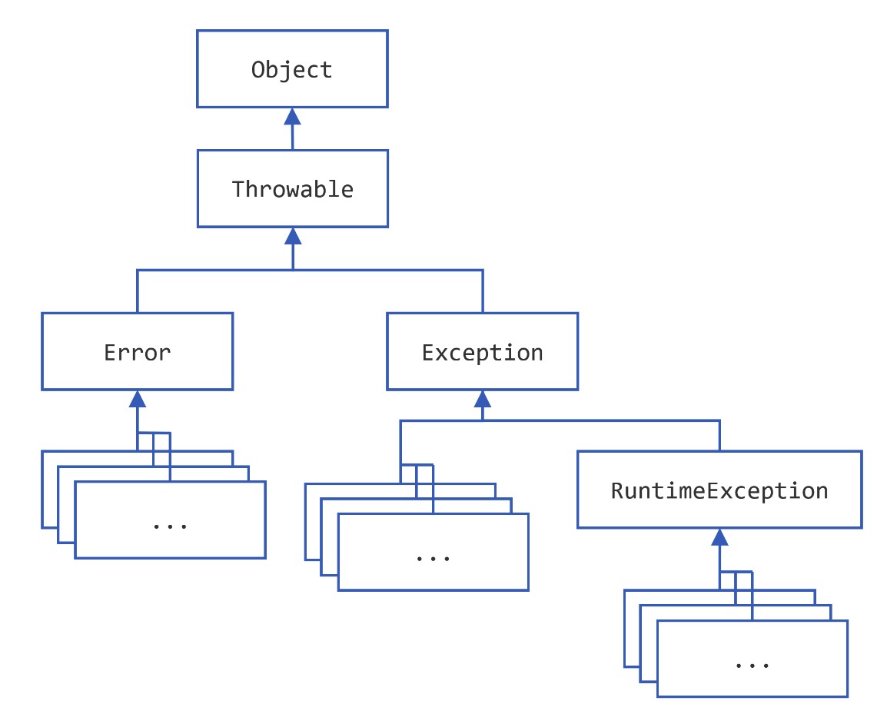

本书作者：测试开发刚哥，文章版权归个人所有，未经授权请勿转载。
Exception
Definition: An exception is an event, which occurs during the execution of a program, that disrupts the normal flow of the program’s instructions.
the checked exception
比如，java.io.FileNotFoundException
the error
比如，java.io.IOError
the runtime exception
比如，NullPointerException
error 和 runtime exception 又叫做 unchecked exception
Catching and Handling Exceptions
try {
code
}
catch and finally blocks . . .
try {
} catch (ExceptionType name) {
} catch (ExceptionType name) {
}
使用|catch 多个：
catch (IOException|SQLException ex) {
logger.log(ex);
throw ex;
}
finally
The finally block always executes when the try block exits.
it allows the programmer to avoid having cleanup code accidentally bypassed by a return, continue, or break.
finally {
if (out != null) {
System.out.println("Closing PrintWriter");
out.close();
} else {
System.out.println("PrintWriter not open");
}
}
finally 一定会被执行，除非在 try 或 catch 的时候 JVM 退出了。
The Try-with-resources Statement
为了确保资源被回收，可以使用 try-with-resources，类似于 Python 的 with 语句：
static String readFirstLineFromFile(String path) throws IOException {
try (BufferedReader br =
new BufferedReader(new FileReader(path))) {
return br.readLine();
}
}
Any object that implements java.lang.AutoCloseable, which includes all objects which implement java.io.Closeable, can be used as a resource.
OkHttp 的示例代码就用到了 try-with-resources 语句：
OkHttpClient client = new OkHttpClient();
String run(String url) throws IOException {
Request request = new Request.Builder()
.url(url)
.build();
try (Response response = client.newCall(request).execute()) {
return response.body().string();
}
}
try-with-resources 语句也可以跟 catch 和 finally：
In a try-with-resources statement, any catch or finally block is run after the resources declared have been closed.
public static void viewTable(Connection con) throws SQLException {
String query = "select COF_NAME, SUP_ID, PRICE, SALES, TOTAL from COFFEES";
try (Statement stmt = con.createStatement()) {
ResultSet rs = stmt.executeQuery(query);
while (rs.next()) {
String coffeeName = rs.getString("COF_NAME");
int supplierID = rs.getInt("SUP_ID");
float price = rs.getFloat("PRICE");
int sales = rs.getInt("SALES");
int total = rs.getInt("TOTAL");
System.out.println(coffeeName + ", " + supplierID + ", " +
price + ", " + sales + ", " + total);
}
} catch (SQLException e) {
JDBCTutorialUtilities.printSQLException(e);
}
}
语法的区别在于，try-with-resources 语句的 try 后面跟的是小括号()，而捕获异常语句的 try 后面跟的是大括号{}。
try-with-resources 语句，小括号里面多个语句以;分隔，但是结尾没有分号：
try(resource1;
resource2
) {
statement;
// 隐式释放资源
}
对比 Python with 语句来看：
with resource: statement
捕获异常语句：
try {
statement;
}
对于 try-with-resources 语句，该如何捕获异常呢？
比如：
try (Response response = client.newCall(request).execute()) {
JSONObject resJson = (JSONObject) JSON.parse(Objects.requireNonNull(response.body()).string());
String result = resJson.getJSONObject("data").getString("result");
return JSON.parseObject(result);
}
可以这样写，加个 try 把整个都包起来：
try {
try (Response response = client.newCall(request).execute()) {
JSONObject resJson = (JSONObject) JSON.parse(Objects.requireNonNull(response.body()).string());
String result = resJson.getJSONObject("data").getString("result");
return JSON.parseObject(result);
}
} catch (IOException e) {
System.out.println(e.getMessage());
}
但更优雅的方式，是直接跟上 catch：
try (Response response = client.newCall(request).execute()) {
JSONObject resJson = (JSONObject) JSON.parse(Objects.requireNonNull(response.body()).string());
String result = resJson.getJSONObject("data").getString("result");
result = result.replace("\n", "").replace("\t", "");
return JSON.parseObject(result);
} catch (IOException e) {
System.out.println(e.getMessage());
}
try-with-resources 语句的 try 能两用，既 with-resources，又 catch-exception。
Suppressed Exceptions
If an exception is thrown from the try block and one or more exceptions are thrown from the try-with-resources statement, then those exceptions thrown from the try-with-resources statement are suppressed.
If try and finally both throw exceptions, then throws the exception thrown from the finally block; the exception thrown from the try block is suppressed.
Throwing Exceptions
使用throws关键字抛异常：
public void writeList() throws IOException {
而在方法内部，则使用throw关键字，注意没有s：
public Object pop() { // EmptyStackException是unchecked，所以这里不用throws
Object obj;
if (size == 0) {
throw new EmptyStackException();
}
obj = objectAt(size - 1);
setObjectAt(size - 1, null);
size--;
return obj;
}
You can throw only objects that inherit from the java.lang.Throwable class.
Note that the declaration of the pop() method does not contain a throws clause. EmptyStackException is not a checked exception, so pop is not required to state that it might occur.
The Throwable hierarchy

Chained Exceptions
把低级别的异常，抛到高级别的异常，进行处理：
try {
} catch (IOException e) {
throw new SampleException("Other IOException", e);
}
getStackTrace()
catch (Exception cause) {
StackTraceElement elements[] = cause.getStackTrace();
for (int i = 0, n = elements.length; i < n; i++) {
System.err.println(elements[i].getFileName()
+ ":" + elements[i].getLineNumber()
+ ">> "
+ elements[i].getMethodName() + "()");
}
}
Logging
try {
Handler handler = new FileHandler("OutFile.log");
Logger.getLogger("").addHandler(handler);
} catch (IOException e) {
Logger logger = Logger.getLogger("package.name");
StackTraceElement elements[] = e.getStackTrace();
for (int i = 0, n = elements.length; i < n; i++) {
logger.log(Level.WARNING, elements[i].getMethodName());
}
}
总结
Most applications you write will throw objects that are instances of Exception. Instances of Error are normally used for serious, hard errors in the system, such as those that prevent the JVM from running.
the Java programming language does not require methods to catch or to specify unchecked exceptions (RuntimeException, Error, and their subclasses).
Here’s the bottom line guideline: If a client can reasonably be expected to recover from an exception, make it a checked exception. If a client cannot do anything to recover from the exception, make it an unchecked exception.
异常的好处
1、逻辑代码与异常处理代码解耦：
errorCodeType readFile {
initialize errorCode = 0;
open the file;
if (theFileIsOpen) {
determine the length of the file;
if (gotTheFileLength) {
allocate that much memory;
if (gotEnoughMemory) {
read the file into memory;
if (readFailed) {
errorCode = -1;
}
} else {
errorCode = -2;
}
} else {
errorCode = -3;
}
close the file;
if (theFileDidntClose && errorCode == 0) {
errorCode = -4;
} else {
errorCode = errorCode and -4;
}
} else {
errorCode = -5;
}
return errorCode;
}
readFile {
try {
open the file;
determine its size;
allocate that much memory;
read the file into memory;
close the file;
} catch (fileOpenFailed) {
doSomething;
} catch (sizeDeterminationFailed) {
doSomething;
} catch (memoryAllocationFailed) {
doSomething;
} catch (readFailed) {
doSomething;
} catch (fileCloseFailed) {
doSomething;
}
}
2、根据调用链抛异常：
method1 {
errorCodeType error;
error = call method2;
if (error)
doErrorProcessing;
else
proceed;
}
errorCodeType method2 {
errorCodeType error;
error = call method3;
if (error)
return error;
else
proceed;
}
errorCodeType method3 {
errorCodeType error;
error = call readFile;
if (error)
return error;
else
proceed;
}
method1 {
try {
call method2;
} catch (exception e) {
doErrorProcessing;
}
}
method2 throws exception {
call method3;
}
method3 throws exception {
call readFile;
}
3、将异常分类：
catch (FileNotFoundException e) {
...
}
catch (IOException e) {
...
}
// A (too) general exception handler
catch (Exception e) {
...
}
参考资料：
Exceptions https://dev.java/learn/exceptions/